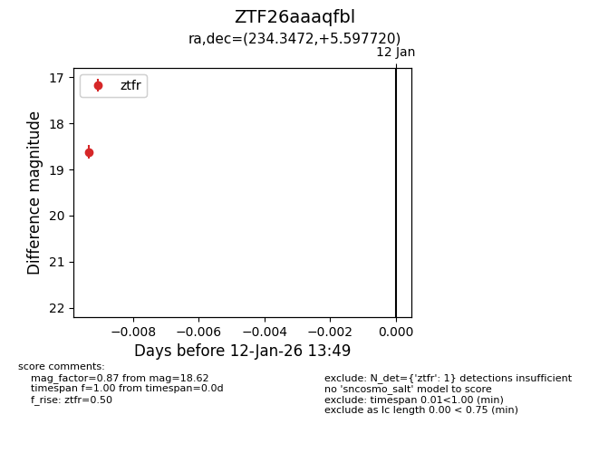
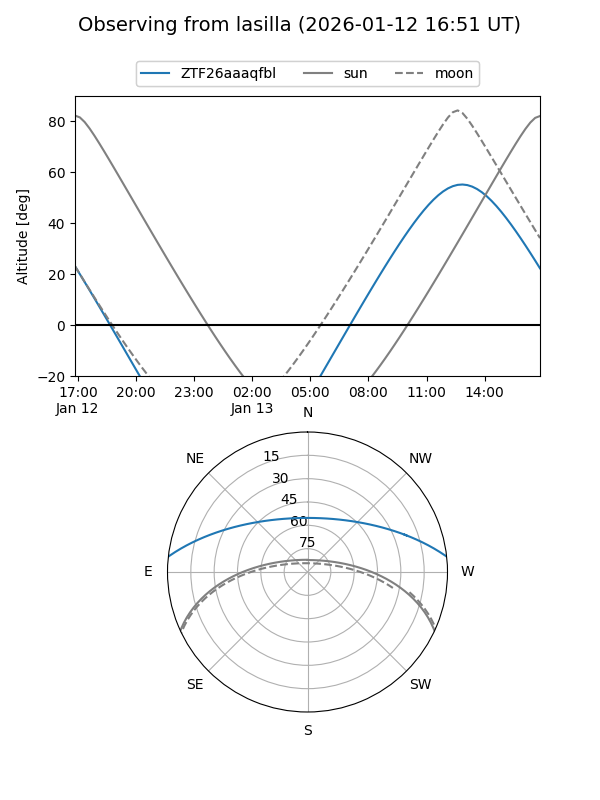
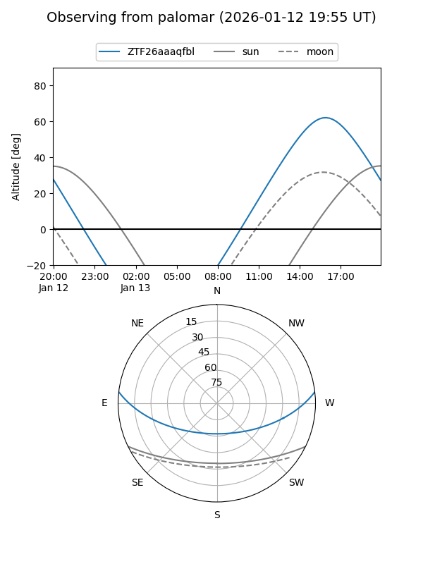

ZTF26aaaqfbl
Target ZTF26aaaqfbl at 2026-01-12 13:50
Aliases and brokers:
FINK: link
Lasair: link
ALeRCE: link
alt names
ZTF26aaaqfbl (ztf,fink_ztf)
Coordinates:
equatorial (ra, dec) = 234.3472,+5.59772
equatorial (HMS+DMS) = 15:37:23.32,+05:35:51.79
galactic (l, b) = (11.9278,+45.07139)
Flags:
Photometry:
last ztfr=18.62
1 ztfr detections
Lightcurve

Visibility


Additional plots